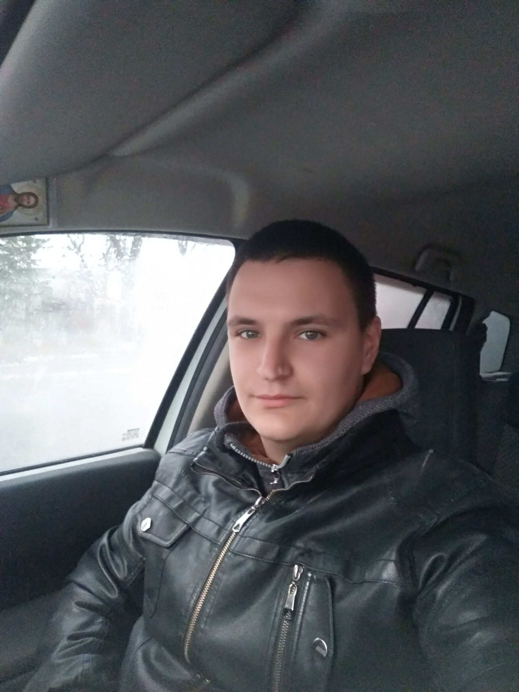

resume
to the post junior front end developer

City of residence: Vinnica
Sphere of activity: forwarder
|
About my:
| He was born in Vinnytsia on January 31, 1997. He graduated from the 9th grade of secondary
school №12, after which he entered
in
VPU №11
for the technical specialty "Repair and maintenance of computers and office
equipment ".
While studying at VPU, he had the opportunity to learn a little about the HTML language and what
programming is. But unfortunately
provided
I did not have enough information in the above-mentioned university. So I decided that I wanted
to study programming
and
choose it as your main profession in life. Going through a lot of different universities and
courses,
decided that this profession is better to study in courses. After all, it's faster, more
practical and
cheaper. Exactly
therefore began searching for courses, choosing courses "Beetroot academy" gained skills and
knowledge on
profession
"Front-End" |
Useful qualities: